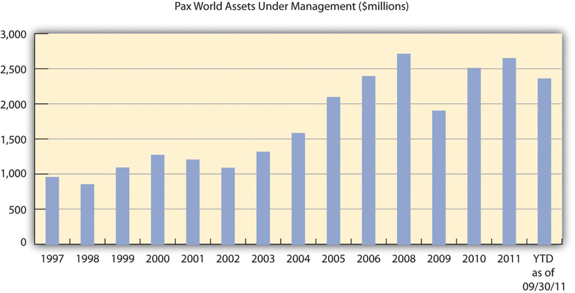
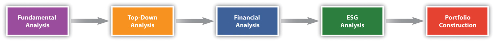

We at Pax World understand that investing is rooted in one’s aspirations for a better, more secure future—it’s really all about tomorrow. Moreover, we believe that Sustainable Investing is an investment approach that is particularly focused on the future—a methodology that searches for better-managed companies that are better positioned for long-term business success. We think our Sustainable Investing approach is right for the times, and is right for our investors.
Pax World (http://www.paxworld.com/about-pax-world/why-invest-pax)
In a speech to the Boston Economic Club on June 15, 2010, Joseph Keefe, president and CEO of Pax World Management, LLC, stated,
We need a new design. We need to take this moment in time to imagine what the Next Economy might look like—an economy that is both post-Sustainability Crisis and post-Financial Crisis. It seems clear to me, first of all, that over the next few decades, market capitalism will need to undergo a Sustainability Revolution equal in significance to the Industrial Revolution that ushered in the modern period. In order for this to happen, corporate behavior, market behavior and investor behavior will need to change. In each case, they will need to become more sustainable—which means, among other things, to behave in a way that focuses more on the long term. Investors can play an important role in this great transformation, as well they should: the transition from an industrial age economy powered by coal and oil to a sustainable economy powered by clean energy and new technologies will unleash a new era of economic and investment opportunities. Sustainable Investing, as I am using the term, is not only a strategy to hasten this historic transformation, but also to harvest the potential investment returns associated with it.Joseph F. Keefe, “Sustainable Investing and the Next Economy” (speech, Federal Reserve Bank of Boston, June 15, 2010), http://www.paxworld.com/about-pax-world/viewpoint.
Socially responsible investing (SRI)An investment strategy that considers the social value or merits of an investment in addition to its financial considerations.—also known as sustainable investing—refers to investment strategies that seek to not only provide financial return but also be consistent with moral values and have positive societal impact. SRI can be as straightforward as an investor who avoids investing in any industry they find morally questionable—such as a tobacco manufacturer—to as complex as a billion-dollar fund that screens in or out many different types of investment opportunities based on key performance indicators in environmental and social areas.
SRI recognizes that corporate responsibility and societal concerns are valid and important criteria for investment decisions. While SRI refers to a spectrum of investing activities, in general, SRI will be referred to as a broad-based approach that invests in companies that manage themselves in ways related to sustainability, including environmental protection and human rights. However, as mentioned previously, SRI can also be morally based and avoid so-called sin industries, such as those involved in alcohol, tobacco, gambling, animal testing, or weapons.
SRI roots back to biblical times, as Jewish law provided specific guidance on ethical investment. In colonial times, Quaker and Methodist immigrants to the United States brought with them the concept of values-based investing exercised by their refusal to invest in slavery or war. In the 1700s, Methodist reverend John Wesley (1703–91) outlined his basic tenets of social investing—including not to harm your neighbor through your business practices and to avoid industries, such as tanning, because of their potential to harm the health of workers.
Modern SRI can trace its roots to the 1960s and 1970s in the United States as concerns over civil rights, the Vietnam War, gender equality, the environment, and nuclear power all emerged.“History of SRI,” SRI Conference, http://www.sriintherockies.com/about/historyOfSRI.jsp. Pax World Funds was created in 1971 as the first SRI mutual fund by Luther Tyson and Jack Corbett, both of whom worked for the United Methodist Church, for investors who did not want to invest in companies involved in the Vietnam War.
SRI investment grew dramatically in the 1980s as significant societal events—for example, apartheid in South Africa, the nuclear disaster in Chernobyl, and the oil spill in Alaska by the Exxon Valdez—led millions of people and organizations to invest in companies that were more socially and environmentally responsible. Other social phenomenon in the 1990s, such as Nike’s use of sweatshops, increased respect for indigenous populations, and tropical deforestation, further supported investment in SRI. By 1995, SRI had grown to fifty-five mutual funds with $12 billion in assets under management. Most recently, climate change has motivated new waves of SRI investment by both institutional investorsOrganizations that pool large sums of money and invest those sums in securities, real property, and other investment assets. Examples include banks, insurance companies, college endowment funds, retirement or pension funds, and mutual funds. and individual investors.
SRI mutual funds now span a wide range of investments opportunities, including domestic and international securitiesA fungible (interchangeable), tradable financial instrument representing financial value, such as stocks, bonds, or options.. In addition to mutual funds, a growing number of financial products are becoming available that target SRI, including hedge fundsInvestment funds that are flexible, can be illiquid and leveraged, and tend to be marketed to sophisticated high net worth individual investors and institutional investors. and exchange traded funds (ETFs)Investment fund with features similar to a mutual fund, except that it is traded on an investment fund traded on stock exchanges, much like stocks..
The performance of SRI funds has slowly convinced investors that there is not a significant trade-off—and there even may be some positive correlation—between social and financial performance. At the end of 2009, a review of 160 socially responsible mutual funds found that 65 percent of the funds had outperformed their benchmarks—funds with similar investment objectives.Jason M. Ribando and George Bonne, A New Quality Factor: Finding Alpha with Asset4 ESG Data (New York: Thomson Reuters, 2010). Between 1995 and 2010, SRI had grown significantly.
As of 2010, there were 250 mutual funds using SRI criteria in the United States, with assets of $316.1 billion.“Sustainable and Responsible Investing Facts,” USSIF, http://ussif.org/resources/sriguide/srifacts.cfm. These funds increasingly compete with traditional mutual funds and SRI-focused funds, such as Pax World Funds, and increasingly compete with the mutual funds industry giants, such as Fidelity Investments, Vanguard, and T. Rowe Price, who have started SRI funds as part of their family of funds. Investors in the traditional funds are increasingly likely to move at least some of their assets to an SRI investment approach. How fast they do this and how much of their investments they direct to SRI funds and to mutual fund companies that only engage in SRI, such as Pax World, will depend on how important a sustainability- and moral values–based approach to personal financial investing becomes for households in the United States and in other nations and also on SRI fund performance and marketing.
At the end of 2010, there were 7,581 mutual fundsInvestment vehicles that are pools of funds that allow retail investors to invest with relatively low amounts. in the United States with combined assets of $11.8 trillion, according to the Investment Company Institute (ICI), a national trade association of investment companies in the United States. This is about 80 percent of the size of total US annual economic activity (gross domestic product) of $15 trillion. Worldwide assets invested in mutual funds totaled $24.7 trillion.
Mutual funds are investment vehicles that are made up of a pool of funds collected from many investors for the purpose of investing in securities, such as stocks and bonds. Anyone who invests in a mutual fund receives shares of the fund. Each share represents an interest in the fund’s total investments, often times called its investment portfolio. Portfolios include equity (ownership) shares in a large number of publically traded companies and bond holdings. Bonds are similar to loans and are issued by companies and public entities, such as cities and states, and purchased by mutual funds and other investors.
The value of mutual fund shares rise and fall depending on the performance of the underlying securities (stocks and bonds) in the portfolio. Similar to a shareholder in a corporation, an investor receives a proportional share of income and interest generated by the portfolio mutual fund units, or shares. Shares can typically be purchased or redeemed (sold) directly from the mutual fund company at the fund’s current net asset value (NAV)The value of a share of a mutual mutual fund that is based on the closing market prices of the underlying securities in the fund’s portfolio. per share.
In 2010, more than fifty-one million US households invested in mutual funds, or about 44 percent of all households. The median number of mutual funds owned by households was four and the median amount that fund-owning households invested in mutual funds was $100,000.
Mutual funds have advantages compared to direct investing in individual securities, including increased diversification, daily liquidity, professional investment management, service and convenience, and ease of comparison. One of the main advantages of mutual funds is that they give diversification to investors with relatively modest amounts to invest. Disadvantages of mutual funds include management fees and less control over timing of recognition of capital gainsA profit that results from investments into a capital asset, such as stocks, bonds, or real estate, which exceeds the purchase price. It is the difference between a higher selling price and a lower purchase price, resulting in a financial gain for the investor. or capital lossesArises if the proceeds from the sale of a capital asset are less than the purchase price..
In the United States, all mutual funds are registered with the US Securities and Exchange Commission (SEC). The SEC was formed after the stock market crash of 1929 in response to abuses in the widely unregulated financial securities markets. Its mission is “to protect investors, maintain fair, orderly, and efficient markets, and facilitate capital formation.”“The Investor’s Advocate: How the SEC Protects Investors, Maintains Market Integrity, and Facilitates Capital Formation,” US Securities and Exchange Commission, http://www.sec.gov/about/whatwedo.shtml. Under the 1940 Investment Company Act, which governs the mutual fund industry, a mutual fund consists of the shareholders and a board of directors (if organized as a corporation) or board of trustees (if organized as a trust) who are fiduciariesSomeone who has undertaken to act for and on behalf of another in a particular matter in circumstances that give rise to a relationship of trust and confidence. charged with acting in the best interests of the shareholders. A fiduciary duty is the highest standard of care. A fiduciary is expected to be extremely loyal to the persons to whom it owes some responsibility; the fiduciary must not put its personal interests before its duty and must not profit from his position as a fiduciary, unless the principal explicitly consents.
The board of directors or trustees is charged with hiring a professional money manager or investment adviser to manage the assets of mutual fund. The fund manager, also known as the fund sponsor or fund management company, invests the mutual fund’s assets in accordance with the fund’s investment objectives. A fund manager must be a registered investment adviser. The fund manager’s responsibilities include portfolio management, legal compliance, operations, and marketing. Mutual fund managers generate revenue by charging investors fees, usually as a percentage of funds managed. These fees are called management fees. The fees normally vary from .3 percent to 1 percent of funds under management.“Socially Responsible Mutual Fund Charts: Financial Performance,” USSIF, http://ussif.org/resources/mfpc. Multiple mutual funds that are managed by the same fund manager and that have the same brand name are known as a “fund family” or “fund complex.” The two largest mutual fund companies have total assets well above $1 trillion (see Table 12.1 "Five Largest Mutual Fund Companies by Assets under Management, November 30, 2009").
Table 12.1 Five Largest Mutual Fund Companies by Assets under Management, November 30, 2009
| Top Five Fund Families | Assets under Management (in Billions of Dollars) |
|---|---|
| Vanguard | 1,313.39 |
| Fidelity Investments | 1,215.41 |
| American Funds | 926.68 |
| JPMorgan | 449.41 |
| iShares | 360.07 |
The largest single mutual fund, American Fund’s Income Fund of America, had net assets of just under $69 billion in 2011. The largest SRI mutual funds’ single funds are small in comparison, Parnassus’ Equity Income Fund has $3.7 billion and the Pax World Balanced Fund has $1.8 billion. The traditional mutual fund companies have also started SRI funds, which are included in their total but these funds are a small portion of their family of funds.
The types of mutual funds vary according to a fund’s investment objective. A fund’s investment objective will usually seek capital gains (gains from the sale of portfolio securities), income (interest and dividends earned on the portfolio securities), or a combination of both. A mutual fund’s portfolio is structured and maintained to match the investment objectives stated in its prospectusA document required by federal law to be provided to investors before investing in a mutual fund or other specific types of financial investments. It provides information useful to investors to help them understand the risks associated with the investment..
The following is a list of common categories of mutual funds:
As of 2011, the Forum for Sustainable and Responsible Investment, SIF (formerly the Social Investment Forum), identified $3.07 trillion in total assets under management using one or more of what SIF defined as the three core SRI strategies—screening, shareholder advocacy, and community investing.“Sustainable and Responsible Investing Facts,” USSIF, http://ussif.org/resources/sriguide/srifacts.cfm. This includes mutual fund investing. Between 2007 and 2010, SRI experienced a 13 percent growth rate from $2.71 trillion in 2007. About one out of every $8 under professional management in the United State—or 12.2 percent of the $25.2 trillion in total assets under management tracked by Thomson Reuters Nelson—was involved in SRI.
There are three core approaches in SRI. First, screening is the practice of evaluating investment portfolios or mutual funds based on social, environmental, and good corporate governance criteria. This includes both positive and negative screens. Positive screening, or “buy” indicators, involves including strong corporate social responsibility (CSR) performers, avoiding poor CSR performers, or otherwise incorporating CSR factors into the process of investment analysis and management. Generally, social investors seek to own profitable companies that make positive contributions to society. “Buy” lists may include enterprises with, for example, strong environmental practices, products that are safe and useful, and operations that respect human rights around the world.
Conversely, many social investors avoid investing in companies whose products and business practices are harmful to individuals, communities, or the environment. This is a negative screen, or “don’t buy or sell” indicator. It is a common mistake to assume that SRI “screening” is simply exclusionary, or only involves negative screens. Positive SRI screens are being used more and more frequently to invest in companies that are leaders in adopting clean technologies and exceptional social and governance practices.
Second, shareholder advocacy involves socially responsible investors who take an active role to encourage corporations to improve their social and environmental practices. These efforts include talking (or “dialoguing”) with companies on issues related to environmental, social, and governance (ESG) issues. Shareholder advocacy also frequently involves filing shareholder resolutions on such topics as corporate governance, climate change, political contributions, gender or racial discrimination, pollution, and labor practices. Shareholder resolutions are then presented for a vote to all owners of a corporation.
The process of dialogue and filing shareholder resolutions generates investor pressure on company management; often garners media attention; and educates the public on social, environmental, and labor issues. Such resolutions filed by SRI investors are aimed at improving company policies and practices, encouraging management to exercise good corporate citizenship, and promoting long-term shareholder value and financial performance.
Third, community investing directs capital from investors and lenders to communities that are underserved by traditional financial services institutions, such as banks. Community investing provides access to credit, equity, capital, and basic banking products that these communities would otherwise lack. In the United States and around the world, community investing makes it possible for local organizations to provide financial services to low-income individuals and to supply capital for small businesses and vital community services, such as affordable housing, child care, and health care. Community investing is the fastest growing area of SRI. From 2007 to 2010, community investing grew more than 60 percent, from $25 billion to $41.7 billion in assets.
Among the mutual fund companies that use an SRI-type approach, Pax World is commonly recognized as the third largest (http://ussif.org/resources/mfpc).Because of the broad definition of socially responsible investing (SRI), it is difficult to do a standard accounting of all the funds that engage in SRI and SRI-like investing. Parnassus Investments (http://www.parnassus.com), based in San Francisco, has about $6 billion in assets under management. Calvert, which includes both SRI and more traditional investing, has sustainability-focused funds of approximately $5 billion (http://www.calvert.com/sri.html). All the SRI funds, as with other investment funds, were larger in assets before the financial crisis of 2008–9. Pax World experienced nearly a 40 percent decline in assets under management during the sharp stock market decline.
Smaller SRI funds have been consolidating over time. For example, Sentinel Funds (http://www.sentinelinvestments.com) bought Citizens Funds in 2008. And further consolidation is expected as some of the big, traditional mutual fund firms enter the market and try to buy SRI mutual fund firms or consider launching their own suite of SRI-like products to compete with Pax World Investments and other SRI funds in response to increasing numbers of institutional and private investors asking for funds with social objectives.
Pax World Investments, Inc., helped to start the socially responsible investing (SRI) industry that exists today. Pax World was founded in 1971 as the first socially responsible mutual fund in the United States. Two United Methodist ministers, Luther Tyson and Jack Corbett, based in Boston and Maryland, wanted to start an investment fund for their church assets that did not support the Vietnam War. They were antiwar clergy, and they specifically did not want to use church funds to invest in weapons and weapons manufacture. The ministers still cared about the financial return of the investment of the churches’ funds to help fund the operations of the churches and did not have the expertise to invest the churches’ funds themselves. They needed an investment manager who would invest their churches’ funds based on the churches’ financial and social objectives. The ministers ended up finding Tony Brown, an investment adviser based in Portsmouth, New Hampshire, which is an hour north of Boston, who was willing to work with them. Mr. Brown was, at that time, with the financial firm Fahnestock, which later became Oppenheimer Funds, and he started managing the churches’ money. It was the first social responsibility directed investment fund and later it grew to become Pax World Funds.
Pax World Funds was named to represent the social objectives of its investment fund, Pax being the name of the Roman goddess of peace and world to represent the broad global perspective of the ministers and the investment fund. The initial investors in the Pax World Fund were the two churches, private investors identified by Tony Brown, and Tony Brown himself. The total initial funds invested totaled $101,000 (about $600,000 in 2011). The first fund later became the Pax World Balanced FundCombines a stock or equity component, a bond component and sometimes a money market component in a single portfolio. Generally, these funds stick to a relatively fixed mix of stocks and bonds that reflects either a moderate (higher equity component) or conservative (higher fixed-income component) orientation. It is geared toward investors who are looking for a mixture of safety, income, and modest capital appreciation. The amounts that such a mutual fund invests into each asset class usually must remain within a set minimum and maximum., which is still in existence today. It is Pax World’s largest mutual fund accounting for more than 90 percent of its total assets under management and one of the largest SRI mutual funds in the world.
Very soon after the first Pax World mutual fund was started, the ministers got the idea that if they could screen out weapons manufacturers they could and should also screen out other things that they did not think were appropriate for church fund investment. They choose to add tobacco industry companies and firms that had a record of pollution to the list not to invest in. Social screens were new for the investment industry at the time, including for Tony Brown. Mr. Brown had to figure out a way to do the screens for the first SRI fund. He hired a recent college graduate to do the screens for the initial fund. The staffer started doing the screening as best they could from public information on companies’ products and services and business practices. There was no experience in this and very little research out about how to do this effectively, and there was only a small amount of publically available data about company social impacts. So the Pax World and the industry first social screener sorted through the industry and company data that was publically available and screened out of investments in defense and tobacco industry companies and well-known polluters.
Pax World is organized as required by federal law as a mutual fund trust company with the Securities and Exchange Commission (SEC). The fund is required to have a registered investment adviser and uses Pax World Management, LLC, as its investment adviser (the management company) for the funds. The two entities are independent but related. Pax World Funds has eight board members with the chair of the board and five of the other board members independent of Pax World Management, LLC.
Since 2005, Joe Keefe has served as president and CEO of both Pax World Funds and Pax World Management, LLC. The 75 percent owner of Pax World Management, LLC, is a holding company for the Shadek family (of New Jersey) with Larry Shadek, the lead family member and chair of the board. The family bought their ownership share of Pax World in 1996. Since 2008, Pax World Management, LLC, employees have purchased 25 percent of the company from the owners. There are four members of the board of Pax World Management, LLC, Joe Keefe, Larry Shadek, another member of the Shadek family, and Chris Brown, the Pax World, LLC, chief investment officer. Every year Pax World Management has to have their investment management contracts renewed with Pax World Funds. In order to get their contract renewed, the company has to show the fund’s board that the funds are performing well, that costs are reasonable, and that the funds are being well managed.
As of 2011, Pax World Management had forty-eight employees organized in six departments (see as follows). This included a portfolio management group headed by a chief investment officer with five (Women’s Equity, Balanced & Growth, High Yield, International, and Small Cap) fund managers, five analysts, and two traders. The sustainability research is in another department with five researchers. In addition to the portfolio management and sustainability research, the other major functional areas are compliance, finance and administration, shareholder services, and marketing and sales. Compliance involves being in accordance with established guidelines, specifications, and agreements with customers and shareholders.
As of 2011, Pax World Funds had eleven mutual funds and two exchange traded funds (ETFs) with assets under management totaling $2.4 billion. The Balanced Fund was started in 1971. The Growth Fund and the High Yield Bond Fund were started in late 1990s. The newest funds were the ESG Managers Portfolios, ESG Shares (ETFs), Pax World Small Cap Fund, Pax World International Fund, Pax World Global Women’s Equality Fund, and Pax World Global Green Fund.
Figure 12.1 Pax World Assets under Management (in Millions of Dollars)
*As of September 30, 2011.
Source: Image courtesy of the authors.
Overall Pax World offers four different investment products areas:
Pax World Funds—a family of actively managed mutual funds across a range of asset classes.
Pax World’s largest fund, their Balanced Fund, is the oldest SRI fund in the industry. It is the second-largest single SRI fund (at $1.8 billion) after the Parnmassus Equity Income Fund ($3.7 billion) as of September 30, 2011.“Socially Responsible Mutual Fund Charts: Financial Performance,” USSIF, http://ussif.org/resources/mfpc.
Pax World’s Balanced Fund has a $250 minimum investment requirement and an expense ratio of 0.96 percent. As of September 30, 2011, compared to the overall market (S&P 500), Pax World’s largest fund has tended to underperform in the short term but outperform over the longer term. When compared to just other balanced funds (the Lipper Balanced Funds Index), the fund has tended to underperform financially at times.
Table 12.2 Comparison of Pax World Balanced Fund to Comparable Investment Benchmarks
| Total Returns » Month Ended September 30, 2011 » Quarter Ended September 30, 2011 | Cumulative Returns (%) | Average Annual Returns (%) | ||||||
|---|---|---|---|---|---|---|---|---|
| 1-Month | Quarter | Year-to-Date | 1 Year | 3-Year | 5-Year | 10-Year | Since Inception | |
| Balanced Fund—Individual Investor Class | –7.92 | –13.77 | –8.90 | –1.04 | 0.98 | –0.34 | 3.24 | 8.14 |
| Balanced Fund—Institutional Class 1 | –7.89 | –13.69 | –8.71 | –0.74 | 1.23 | –0.11 | 3.36 | 8.17 |
| Balanced Fund—R Class 2 | –7.93 | –13.78 | –9.04 | –1.23 | 0.73 | –0.53 | 3.14 | 8.11 |
| 60% S&P 500 Index / 40% Barclays Capital US Aggregate Bond Index | –3.93 | –7.04 | –2.65 | 3.05 | 4.44 | 2.25 | 4.29 | — |
| S&P 500 Index | –7.03 | –13.87 | –8.68 | 1.14 | 1.23 | –1.18 | 2.82 | — |
| Lipper Balanced Funds Index | –5.36 | –9.62 | –5.41 | 0.30 | 3.94 | 1.53 | 4.13 | — |
| Pax World Balanced Fund—Individual Investor Class | –7.92 | –13.77 | –8.90 | –1.04 | 0.98 | –0.34 | 3.24 | 8.14 |
| 60% S&P 500 Index / 40% Barclays Capital US Aggregate Bond Index | –3.93 | –7.04 | –2.65 | 3.05 | 4.44 | 2.25 | 4.29 | — |
| S&P 500 Index | –7.03 | –13.87 | –8.68 | 1.14 | 1.23 | –1.18 | 2.82 | — |
| Lipper Balanced Funds Index | –5.36 | –9.62 | –5.41 | 0.30 | 3.94 | 1.53 | 4.13 | — |
According to Morningstar, one of the leading providers of independent investment research in the world, in the eleven years from 2000 to 2011 Pax World’s Balanced Fund performed in the top quartile among all (not just SRI) funds in its category five of the year, in the bottom quartile five of the years, and in the second lowest quartile in one year.
A significant challenge for Pax World has been to attract investors to their fund. Wall Street and the traditional investment marketplace were at first skeptical of social screens and SRI in general. The Wall Street perspective was that social screens “shrink” the investment universe by screening out investment opportunities based on values—such as not investing in companies with poor environmental records—rather than on financial performance. It was believed that it was far more difficult for SRI funds to achieve strong market performance in terms of returns on investments, capital gains, and investment income. This pervasive perception was the biggest early barrier SRI.
The performance over time of the SRI funds compared to the universe of funds has convinced increasing numbers of investors. At the end of 2009, a review of 160 socially responsible mutual funds found that 65 percent of the funds outperformed their benchmarks—funds with similar investment objectives—and a United Nations Report concluded, “There is mounting empirical evidence that companies with better corporate governance practices carry less risk and outperform poorly governed companies over time; that companies with strong environmental performance carry less risk and outperform environmental laggards over time; that companies with good workplace practices enjoy higher productivity, higher morale, lower turnover and increased profitability.”UNEP Finance Initiative, Show Me the Money: Linking Environmental, Social and Governance Issues to Company Value (Geneva, Switzerland: United Nations Environment Programme, 2006).
Pax World experienced its own internal challenge in regards to ethics and social responsibility. On July 30, 2008, the SEC fined Pax World Mutual Funds $500,000 because it failed to follow its own SRI criteria from 2000 to 2005. The settlement between Pax World and the SEC concluded an investigation that had commenced in December 2004, prior to CEO Joe Keefe’s arrival at the company. Pax World’s funds had invested in some of the kinds of companies they were supposed to avoid. For example, the Pax Growth Fund owned shares of a major oil and gas exploration company, even though it had failed three of Pax’s social screens. And the Pax High Yield Fund owned bonds issued by a company that had major revenue from gambling and liquor. The SEC found Pax had violated its own restrictions by purchasing at least ten securities that screening criteria prohibited; in addition, Pax failed to screen 8 percent of its new security purchases between 2001 and 2005. Continuously from 2001 through early 2006, the Pax Growth Fund and the Pax High Yield Fund held at least one security that violated criteria. All told, the fund company held forty-one securities that either weren’t screened or didn’t pass its screens.Mark Jewell, “Pax Fined for Failure to Screen Investment Funds,” USA Today, July 30, 2008, http://www.usatoday.com/money/economy/2008-07-30-1549841276_x.htm.
The following comments were made by some of the people involved in the incident:
“Mutual fund companies marketing socially responsible funds need to be responsible themselves,” said David Bergers, regional director of the SEC’s Boston office.
“Advisers simply cannot tell investors they are going to do one thing with their funds and then not follow through on those promises,” said Linda Chatman Thomsen, director of the SEC Division of Enforcement, in a statement.
Pax World Management Corporation, the then investment adviser to Pax World Funds and predecessor to Pax World Management, LLC, the reorganized management company, entered into a settlement order with the SEC dated July 30, 2008. Under the terms of the settlement, Pax World agreed to a cease and desist order and a civil penalty of $500,000 under Section 206(2) of the Investment Advisers Act, which is a section involving negligent conduct, not intentional wrongdoing.
Pax World, under the leadership of Joe Keefe, undertook a vigorous response, and the SEC chose to recognize Pax World’s substantial remediation efforts and cooperation in its order. In addition, the Pax World Balanced Fund, which held approximately 95 percent of Pax World assets during this time period, did not purchase any unscreened securities and was not cited in the order.
The portfolio managers of the two funds involved—the Growth Fund and the High Yield Fund—as well as the head of the social research department and Pax World’s outside counsel and chief compliance officer all left the firm. Pax World completely overhauled its compliance procedures to ensure that its portfolio managers can only buy securities that have passed their social and environmental criteria. As part of a top-to-bottom reorganization and modernization of their business operations, Pax World put in place new sustainability screening and other compliance procedures, controls, and technology.
In a 2011 interview, CEO Joe Keefe said of the mistakes made, “I can tell you that today Pax endeavors to meet best practices in all aspects of our business and operations. And we have a compliance culture that I would match up against any in the industry. Like all companies (and all individuals) we are not perfect, but we learn from our mistakes, are proud of the progress we have made and are constantly striving for improvement.”
Pax World had primarily relied on exclusion, for example, negative screens, for avoidance of undesired companies to invest in. However, the resistance to the screening out of some companies among traditional investors led Pax World, in 2006, to change their approach from socially responsible investing (SRI) to “sustainable investing.”
To Pax World, sustainable investing is similar to and has its origins in SRI, but it is fundamentally different. For Pax World, sustainable investing involves fully integrating environmental, social, and governance (ESG) factors into investment analysis. So where SRI had tended to define itself by what not to invest in, sustainable investing defines what to invest in.
Table 12.3 Differences between Sustainable Investing and SRI
| Sustainable Investing | SRI |
|---|---|
| Performance-based orientation | Values-based orientation |
| Inclusionary approach—seeks to identify leaders in sustainability | Exclusionary approach—negative “screens” for avoidance of “sin stocks” |
| Striving for broad market acceptance | Niche (“alternative”) investment style |
Pax World’s new methodology allows it to invest in companies that have superior sustainability or ESG performance. By investing in “sustainable” companies, Pax World seeks to reduce risk and deliver competitive long-term investment performance. By combining rigorous financial analysis with equally rigorous ESG analysis, there is an increased level of scrutiny that helps them construct portfolios made up of companies that
The goal is for all the funds to beat the performance of group peer funds, not just other SRI funds. For each of Pax’s funds, this means outperforming on an average return on investment basis funds with similar investment objectives. Pax World’s view is that rigorous financial and ESG analysis will lead to superior fund performance over time. This emanates from the Pax World perspective that companies that do well on both analyses and that execute well on both financial and ESG measures will be the best performers in terms of return for mutual fund investors.
Figure 12.2 Pax World’s Sustainable Investing Approach

Investment analysis is very detailed and difficult work. Pax World’s investment process is a well-defined, systematic, four-step process: (1) top-down analysis, (2) financial analysis, (3) ESG analysis, and (4) portfolio construction. This process takes Pax World from assessing the broad universe of investment opportunities to assessing a selection of investments for its funds. The ESG analysis of the four is the least established and most qualitative.
Figure 12.3 Pax World Investment Process
Deciding how to invest funds starts with a top-down analysisAn information processing strategy where a system is broken down into smaller subsystems. It can also be thought of as a bird’s eye or high-level view of a system, issue, or problem. of domestic and international economies. This involves analysts identifying long-term economic, social, and political trends and their investment implications. This global economic analysis can include the interest rate environment, consumer sentiment, and unemployment. The top-down analysis helps to determine the broad sectors of the economy for Pax World funds to invest in and, more specifically, to overinvest or underinvest in relative to benchmarks by fund type average.
The major themes in 2011, for example, included aging population demographics in developing nations (including the United States, Japan, and many European nations), the growth of emerging markets (such as China, India, and Brazil), and strong demand for and limited supply of natural resources (which puts price pressure on many commodities).
The top-down analysis also includes identification of some shorter-term factors. In 2011, this included the economic recession and low consumer confidence.
The 2011 themes suggested that Pax World funds invest in industries that benefit from (e.g., sell in or to) aging demographics, commodities, and emerging markets over and above the percentages in the benchmark fund. Specific industries to invest in the 2011 market, for example, would include construction, mining and utility equipment companies with a majority of their sales in emerging nations, and consumer product companies with more than 50 percent of sales in emerging markets.
The next step involves fundamental financial analysisIn-depth financial analysis performed on an individual security basis to identify superior investment opportunities.. This is in-depth financial analysis on an individual company basis to identify companies that appear to offer above-average relative growth rates, sound business models, strong competitive positioning, and attractive valuations. Pax World financial analysts target individual companies or stocks in their specified industry sectors. Each financial analyst is responsible for three sectors.
Company financial fundamentals are reviewed mostly using financial information that is available for all publically traded companies and required by governmental regulatory bodies including the Securities and Exchange Commission (SEC) in the United States. Companies within industries are compared based on their profitability, growth, valuation, and quality. Income statement and balance sheet information for companies, including returns on equity and assets, long- and short-term growth in earnings, price-to-earnings ratio, and debt-to-capital ratio are considered along with other financial information.
Pax financial analysts determine overall rankings of companies in targeted industries by using a weighted composite measure. In most cases, the top twenty-fifth percentile of performers in the targeted industries are identified for potential investment. In addition, financial analysts review the financial performance of all the holdings regularly.
If a company passes the financial test and is among the top twenty-fifth percentile in a targeted industry it will go to the sustainability research team, and they will do an environmental, social, and governance (ESG) analysisEvaluation of the quality of corporate management with respect to environmental, social, and governance criteria.. ESG analysis involves an evaluation based on ESG criteria. The ESG analysis includes review of company ESG performance with three views—past performance, current policy, and future trajectory. A company with poor prior performance, improved current policy, and positive future trajectory would be more favorably rated than a company with static moderate performance. The review by ESG analysts results in companies passing, failing, or passing but requiring monitoring. For example, Pax World was monitoring BP just prior to the BP Gulf of Mexico oil spill in 2010.
Environmental considerations include whether there has been company violations of environmental laws (such as the Clean Air Act and Clean Water Act in the United States), the company’s record of management of emissions, climate change–related policies and actions, and renewable energy use or development. On social issues, consideration is given to human rights issues in countries in which companies operate, for example, treatment and rights of women and workforce issues, such as worker safety, child labor laws, and minimum wages. On governance, the key issues assessed include board independence (e.g., the percentage of outside directors), diversity of board (including percentage of females on the board), and executive compensation practices and policies.
The sources of information used for the ESG analysis include company reporting in annual reports and in separate sustainability reports. The latter are increasing in numbers as companies, particularly larger companies and companies in Europe, are providing sustainability reports (see Chapter 4 "Accountability for Sustainability"). Other key sources of information include government data (e.g., from the US government’s Food and Drug Administration [FDA], Occupational Safety and Health Administration [OSHA], and Environmental Protection Agency [EPA]); news coverage and composite reporting of news coverage from Dow Jones Factiva (http://www.dowjones.com/factiva/index.asp); other third-party sources, such as MSCI ESG Research (http://www.msci.com/products/esg/about_msci_esg_research.html), Goldman Sachs, and the Corporate Library (http://www2.gmiratings.com); and nongovernmental organizations (NGO), such as Silicon Valley Toxics Coalition (http://svtc.org/resources/reports).
Smaller companies are harder to get information on, as are many companies in the developing markets. Some countries require a lot of disclosure and some don’t; it varies greatly. In general, publically traded companies in the United States and Western Europe are required to disclose information on financial, environmental, and social factors that will affect their market value but there is significant discretion in doing this.
Big companies, such as General Electric, Exxon-Mobil, Starbucks, and Walmart, have a lot of ESG information available through media attention, NGOs, and other watchdog groups. They’re pretty transparent and increasingly so. But as you go down the capitalization scale, smaller companies are not as transparent, so it can be harder to research a smaller company or a company in an emerging market. These are some of the factors Pax World Management ESG analysts have to deal with. It gets more or less complicated depending on what company they are researching.
Figure 12.4 Examples of Pax World’s ESG Factors

The ESG analysis team’s long-term goal is to be able to assess a larger number of companies on ESG performance (not just those provided to them in the top twenty-fifth percentile according to traditional financial criteria) and, over time, to be able identify companies that are strongest in ESG performance and based on that identifying if the company should be considered for Pax fund investment by the financial analysts. This would enable a more interactive and dynamic investment selection process with more active ESG consideration.
In order to get to this, and to be able to identify companies in percentiles of ESG performance, ESG analysts have to be able to more formally and fully quantify their analysis. While the ESG analysis has made substantial progress in being more quantitative, structured, and rigorous from its start in 1971, the ESG analysis remains limited to quantitative final assessment of pass or fail, without precise definition or measurement of ESG performance. Part of this is a result of the limited data available and the difficulty of collecting the data that might be available, but it might more strongly reflect the relative newness of ESG analytics compared to traditional financial investment analysis, which has been developing for more than one hundred years. This is true at Pax World and with SRI funds in general.
An example of a company that made it through Pax’s financial review process, but not the ESG process, is Suez Environment. Suez is a utility company based in France that operates largely in the water treatment and waste management sectors (http://www.suez-environnement.com/en/homepage), providing drinking water to seventy-six million people worldwide.
Suez was identified as being in a growing industry and emerging as an industry leader with strong financials in that industry. The company failed the ESG review based on a number of negative factors, including employee tampering with water supply testing, high incidence of worker injury, and antitrust investigation by the European Union.
Portfolio constructionChoosing a select number of companies that meet criteria that emerge from the combination of financial and ESG analysis to be included in the fund. involves choosing a select number of companies that emerge from the combination of financial and ESG analysis and that meet both the financial and sustainability criteria and, as a portfolio, the overall investment guidelines of individual funds (e.g., targeted percentages for bonds and stocks). This entire process is repeated as new insights are developed or economic conditions change.
Every company in the Pax World mutual fund portfolio is reviewed from a financial and ESG perspective on a periodic basis, mostly annually.
The increasing investments in socially responsible investing (SRI) mutual funds reflect enhanced awareness of the potential positive influence of sustainability in businesses financial performance. This is in contrast to when Pax World first started in 1971, when most investors and investment managers believed that companies would incur costs with social- and environmental-minded efforts. Now more and more investors believe that over the long term, sustainable business practices can help to lower costs and risks, can open up market opportunities, and can have a net positive financial impact on business performance and returns on investment.
And for Pax World, its approach to SRI is increasingly well recognized and respected. According to Morningstar, the Pax World Balanced Fund “has terrific socially responsible investing bona fide. It is the flagship offering of fine all-SRI shop. Manager Chris Brown has been at the helm for 13 years, so he’s more seasoned than a healthy majority of SRI skippers (and a healthy majority of allocation managers). And Brown steadfastly applies a rigorous set of environmental, and social, and governance factors while running the portfolio.”“Pax World Balanced Individual Investor,” Morningstar, September 2011, http://quote.morningstar.com/fund/f.aspx?t=PAXWX.
Still, critical to the success of Pax World and its growth—as with any mutual fund company—is financial performance. As Joe Keefe, Pax World Investments CEO and president, commented,
For Pax World, because we’re a mutual fund company…I would say the number one component critical to our success is the financial performance of our funds. We have a fiduciary obligation to our shareholders to try to get them market or above-market returns and to manage their risk. So that’s fundamental to what we do.…If we grow, we do two things. First of all, we are successful as a business. And we are a business, so we’re trying to make money and make a profit. But we also are a mission-driven business, and as we grow assets, not only will we become more profitable and successful from a business perspective, but we will have more impact. And that’s what, ultimately, this has to be about. We want to change corporate behavior. We want markets to produce better outcomes, not just financially, but from a social and environmental perspective. And the larger we get, the more leverage we have, the more we can change investor behavior, and the more we can change corporate behavior.
For Pax World, increasing the funds under management is not just for their own profitability, and it’s not growth for its own sake; it’s toward Pax World’s mission, which is changing corporate America. Pax World’s growth and changing corporate America are tied together because the more successful Pax World Funds and Management are from a business perspective, the more leverage they will have to be more successful from a social and environmental perspective. They reinforce each other. They’re integrated, which is what triple bottom line (TBL) and sustainable companies try to achieve—the successful integration of environmental and social factors into their business models.
Investment in SRI mutual funds and public awareness of the importance of environmental, social, and governance (ESG) factors in financial performance accelerated from 1990 to 2010, as there were increasing numbers of examples of companies that suffered significant financial losses by not being attentive environmentally, such as was the case with BP and the Gulf of Mexico oil spill in 2010.
Individuals are at the same time personally experiencing the financial benefits of their environmental practices, such as reducing energy and materials use. Increasing numbers of people are beginning to see environmental stewardship as a financial positive rather than a cost, and this influences their investment decisions over time.
A similar dynamic could be suggested about concern about treatment of workers and good corporate governance. Most individuals had doubts about the financial relevance of the treatment of workers and good governance. Now there is increasing evidence that companies that treat their workers well have higher productivity and lower absenteeism (as stated in a McGill University study published by Harvard Business Review, http://www.portfolio.com/business-news/2010/05/19/harvard-publishes-study-that-shows-treating-workers-well-boosts-bottom-line), and on the governance side, many investors have personally experienced the fallout from the 2008–9 financial crises that resulted from unethical business practices that could have been avoided with stronger governance.
Pax World’s shareholders, like most mutual fund investors, are not interested in short-term performance. This is compatible with Pax World’s approach and use of ESG factors that can tend to play out over the long term to affect company financial performance and to help minimize risk. That does mean that in every year Pax’s funds do better than or as well as a non-ESG funds. But as Joe Keefe says, “We believe over time we can outperform other funds because environmental, and social, and governance factors have what they call materiality. In the financial world, all that really means is relevance. They are relevant to how companies perform. So we think focusing on them is really important.”
Pax World has traditionally been primarily a retail mutual fund, with a majority of its funds under management for individual and household investors. However, Pax’s institutional presence is increasingly important. Many of the so-called individual or household investors are coming to Pax through institutional investment platforms, such as through an option for pension funds, through personal financial planners and investment adviser recommendations, and through platforms provided for investors through larger financial players, such as Schwab, Fidelity, Merrill Lynch, and UBS. Increasing Pax World’s institutional presence is not a question of retail or institutional because the two are integrated.
An increasing number of large institutional investors and the major consultants that work with them are incorporating SRI into their portfolio as evidenced by the significant increase in SRI recently. Individuals tend to either invest directly or, now more often than not, they invest through a broker, financial adviser, or a financial planner. And individual brokers and financial planners tend to be individuals who have to do a lot of research on their own, and they don’t necessarily have all the most recent findings on SRI performance. Thus on the individual and household investment side, Pax World growth is being driven a lot by the investment advisers as the intermediary to the end customer. Pax World’s task then becomes to convince a financial planner to include Pax World in what they recommend to their client.
On the “pure” institutional side, Pax World continues to have religious institutional investors and pension funds. Looking forward Pax World plans to attract more and more investment from institutional investors because the institutional investment world is ahead of the individual investment world in embracing sustainable investing in many respects. There are reasons for this, including having the track record of performance being similar to traditional funds. As Keefe commented, “Eventually, individual investors will catch up, but institutional investors in general are ahead of the curve right now in embracing our investment approach. Institutional investors study market trends. They have a lot of research and data at their disposal, and they’re seeing a lot of the research, a lot of the data, that underscores the materiality of ESG, or the financial relevance of environmental, social, and governance factors.”
Even with all the positives for Pax World and the more general acceptance of SRI-like funds, many believe that it will still require the next generation of investors to have Pax World and SRI get closer to 50 percent of mutual fund holdings. Personal investments are “sticky”—they don’t change that easily. And the SRI approach to investing, incorporating the ESG into the analysis, is very different from the traditional approach.
But the data show high growth recently, suggesting the hockey stick model of growthDescribes a pattern in which an industry or a company’s revenue or sales start off at a low level and grows slowly over time, sketching in the blade of the hockey stick. Then, if all goes well, at some point, growth starts to increase more rapidly, creating the upward curve that is the stick’s neck. And then, if the industry or company is really onto something, revenue takes off and growth becomes almost vertical; that’s the handle of the stick. might be at work. There are two things going on. The first is that the generation of baby boomers is inheriting wealth from its parents. And that generation is more likely to want to have some alignment between its values and its investments because they are the ones who grew up during the Vietnam era. Second, you go to the generation behind the baby boomers, and according to Keefe, “they are even more inclined toward concern about the environment and SRI-type-investment, because the notion to them that your investments can be somehow out of whack with the rest of your values and the rest of your lifestyle does not make sense. They want to have that alignment. When we were growing up, certainly our parents’ generation, but to some extent ours, would say something like, well, great, but your investments should just be making money. Then, if you want to change the world, give it to charity. Get involved in your community, protest. Now investing and values needing to be integrated into their investment decisions by boomers and others, and this is the hockey stick—SRI is ramping up fast.”
As the SRI industry grows and its prospects look more promising, the traditional mutual fund companies are moving aggressively into SRI. This is happening through traditional families of funds starting new funds on their own or acquiring existing SRI funds. With this trend, Pax World could get purchased or lose market share within the SRI industry to the larger mutual fund company participants.
It is increasingly important for Pax to differentiate what they do. This was accomplished with the adoption of the sustainable investing approach in 2006. And Pax World has added new funds that are innovative, including the Global Women’s Equality Fund, which is the only mutual fund in America that focuses on investing in companies that treat women better, that invest in women, and that recruit and promote them. Pax World added the Global Women’s Equality Fund because of their belief that there are connections between having more women in management and more women on your board and financial performance.
On the issue of women’s equity and other issues, Pax World also differentiates themselves from traditional mutual fund companies by its many investor initiatives. With regards to women’s equity, this includes collaboration with the United Nations Principles for Responsible Investment (UNPRI) and the Calvert funds to encourage greater gender equality on boards of directors and in senior management and to promote improved disclosure. (As of 2011, only 13 percent of Fortune 500 board chairs are held by women.) Pax World launched a campaign to promote greater gender diversity on corporate boards by encouraging investors to vote no on proxies for board membership that did not contain a sufficient number of women. During the 2011 proxy season, Pax World withheld votes from, or voted against, 264 director slates for insufficient gender diversity, sending notification letters to those companies explaining why and offering guidelines to improve diversity.
Pax World is an increasingly active shareholder representing investors with proxy votingParticipation in the company’s annual general meeting via mail, phone, or Internet. It is the primary means by which shareholders are able to direct company management to act in a socially responsible manner.. During the 2011 proxy season, Pax World also signed on to eighteen environmental initiatives, many of which focused on the oil and gas industry. For example, Pax World joined other investors in writing to oil and gas companies engaged in offshore oil drilling, requesting information regarding the companies’ policies and programs to manage operational risks and steps taken to improve them.
Pax World has participated in multiple initiatives led by Ceres (a national coalition of investors, environmental organizations, and other public interest groups working with companies to address sustainability challenges), encouraging Congress and state legislators to take action on environmental standards. These included decreasing emissions of air pollutants and greenhouse gasses, passing comprehensive clean energy legislation, and urging the EPA to raise fuel economy standards for motor vehicle fleets.
Pax World also joined with other investors in the Investor Network on Climate Risk urging California voters to oppose Proposition 23, a statewide ballot initiative that would have stopped implementation of the state’s landmark clean energy bill. The proposition was rejected in the fall 2010 election. In addition, Pax World signed on to an initiative led by the organization As You Sow, urging companies to take responsibility for recycling postconsumer product packaging. The companies receiving the letter included General Mills (whose share holdings represented 1.8 percent of the Pax World holdings in the Growth Fund), Procter & Gamble (1.4 percent of the Growth Fund and 0.9 percent of the Balanced Fund), and Unilever (1.6 percent of the Global Women’s Equality Fund and 1.9 percent of the International Fund). Pax World also cofiled a shareholder resolution led by Domini Social Investments with Southwestern Energy (1.4 percent of the Growth Fund) requesting that the company publish a report on the risk of hydraulic fracturing as a means of obtaining natural gas. The company agreed to improve its disclosures and work with stakeholders to develop a model disclosure format for other natural gas firms; the resolution was successfully withdrawn.
Pax World’s focus looking forward is not as much on their SRI industry competitors, like Parnassus, but on growing the overall SRI market and changing corporate America. Their main competitors looking forward are Fidelity Investments, Vanguard, T. Rowe Price, and others of the large traditional mutual fund families whose investors are increasingly likely to move at least some of their assets to an ESG-like investment approach. In many respects, Pax World’s main challenge is to try to win those people over who are not familiar or were previously not comfortable with sustainable investing and to try to convince people that their values do not have to be compromised when it comes to their financial investments. And this will require strong financial and ESG performance at Pax World, particularly with evidence that companies with better ESG performance have better financial performance.
As Keefe commented, “There are studies suggesting that, over time, funds and investors that use the ESG approach do better than the market. And I believe, over time that will clearly be the case.…I think once you start measuring up 10-year track records versus 10-year track records, I think you’re going to see that this investment approach holds up very well.…there’s all kinds of research now suggesting that environmental, social, governance factors are relevant.…over time, we’re going to be able to convince more and more people of that.”
And for Pax World, if they grow, they can have greater societal impact—with the company’s business success and societal impact being intimately tied together. For Pax World, there are opportunities to change corporate behavior on greenhouse gas emissions and climate change, on gender issues, and on all kinds of social and environmental issues that will help markets produce better outcomes. But to do that, Pax needs to grow its asset base.
Europe certainly is ahead of the United States right now in embracing sustainable investing. In fact, most of the governments in Europe, for their own government pension funds, have a mandate for it. But Pax World would have to get licensed in Europe and it’s a complicated and costly process. The company would have to launch new entities and they are not like Fidelity and some of the larger mutual fund companies that are large enough to establish themselves outside the United States.
According to Keefe, “The main opportunities for us right now are, one, opening up conversations that were hard to open up before in the US, with investment advisers, the intermediary platforms, and institutional investors. Those conversations are starting to happen now. In fact, we have a hard time keeping up with it all.”
To open up these opportunities, Pax has newsletters and their own marketing and sales teams to e-mail and visit the financial planners and financial advisers. The company also does webinars and podcasts. There are also opportunities with particular demographic groups, such as female investors. With research showing that women are more likely to want to align their investments with their values than men (http://www.northerntrust.com/wealth/11-summer/women-in-wealth.html). Research shows that women are controlling a larger share of investment dollars. On the institutional side, there are opportunities with private foundations and their endowments and pension funds. The strategy is to launch the products that the investment community wants, to attract investors, and to communicate with those investors, which often is through their advisers and intermediaries.
The biggest challenge for Pax World continues to be overcoming the conventional wisdom in the financial industry that if you base investments on moral values, you’re going to have to significantly sacrifice financial performance in order to do the right thing.
SRI market analysis.
Table 12.4 All Balanced Funds
| Morningstar Category | 1 Year | 3 Year | 5 Year | 10 Year | Equity (%) | Bond (%) | Cash (%) |
|---|---|---|---|---|---|---|---|
| Median | −0.16 | 3.85 | 1.46 | 4.20 | 56.48 | 33.10 | 6.39 |
| Average | −0.23 | 3.87 | 1.49 | 4.30 | 52.22 | 33.87 | 10.01 |
| Number of funds | 506 | 458 | 403 | 257 | 531 | 531 | 531 |
Table 12.5 All SRI Balanced Funds
| Morningstar Category | 1 Year | 3 Year | 5 Year | 10 Year | Equity (%) | Bond (%) | Cash (%) |
|---|---|---|---|---|---|---|---|
| Median | −0.16 | 3.18 | 0.83 | 3.35 | 56.99 | 33.55 | 5.14 |
| Average | −0.35 | 3.21 | 1.06 | 3.47 | 55.99 | 34.40 | 7.70 |
| Number of funds | 30 | 23 | 23 | 14 | 30 | 30 | 30 |
The previous charts show the financial performance of all balanced mutual funds versus only SRI-balanced mutual funds (including Pax World) for the period ending September 30, 2011. Compare the one-year, three-year, five-year, and ten-year financial performance of the two different categories. Does this evidence support or refute assertions that SRI funds outperform the overall market? What might be some reasons for the difference in performance? How does this example compare with other examples of SRI performance in the chapter? What conclusions can you draw on the comparison? What are the implications for the future growth potential of SRI funds and Pax World funds specifically?